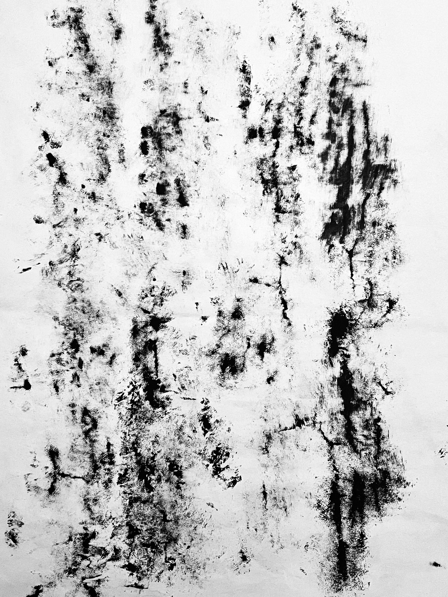

Creative Invitations
Each offering below is a practice of connection — to land, to self, to one another.
- Sketching with Stones & Leaves — trace the language of the forest
- Poetry Prompts from Birdsong — listen, write, and respond to what flies
- Photography Walks — discover your surroundings with renewed vision
Art Installation: By-the-Wind Sailor Reflections
This installation takes inspiration from Velella Velella, mysterious ocean drifters. Constructed along the shoreline with reclaimed materials, it merges sculpture and verse — a meditation on fragility, currents, and collective presence.

Daining Zhang

Daining Zhang

Daining Zhang

Diellza Veliqi & Biray Ozdol

Diellza Veliqi & Biray Ozdol